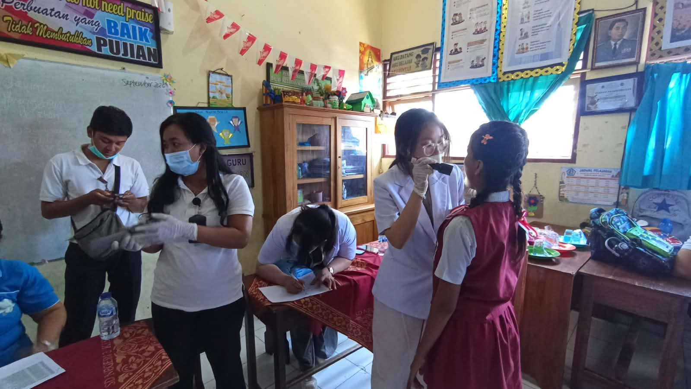
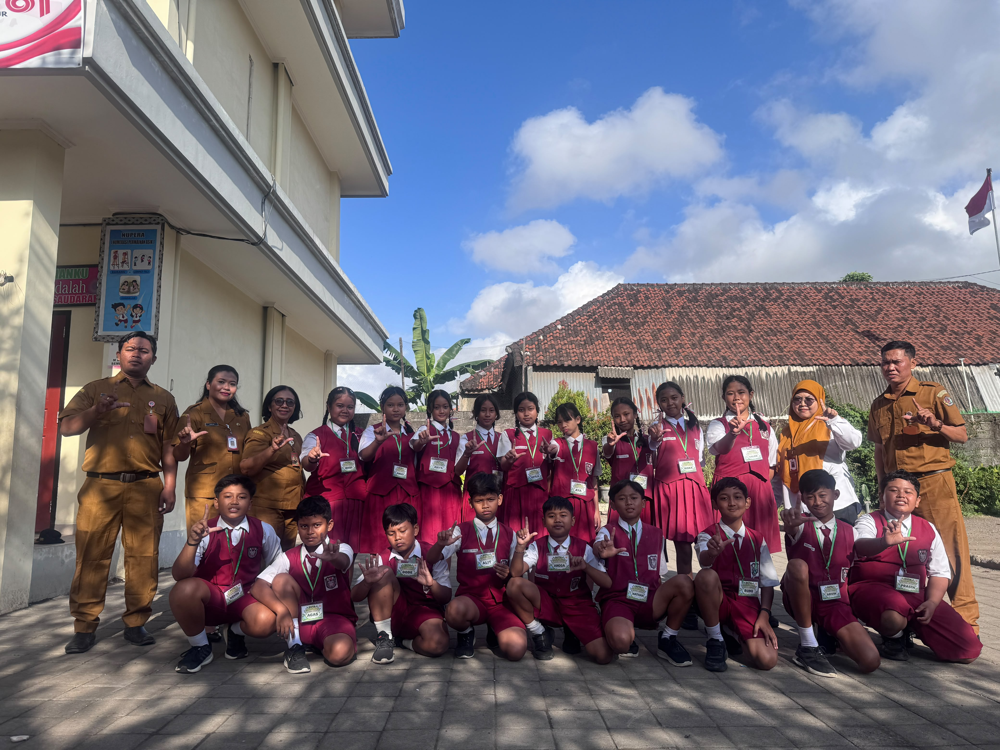

Kesehatan
Imunisasi BIAS bagi Siswa Kelas I dan V
Pelayanan imunisasi MR dan HPV bersama UPTD Puskesmas II Denpasar Timur untuk mendukung tumbuh kembang peserta didik yang sehat.
Baca selengkapnya →
Kolaborasi
Kerja Sama dengan PPLH Bali melalui Program Sekolah Ekologis
SD Negeri 3 Kesiman memperkuat pendidikan lingkungan melalui Program Sekolah Ekologis periode 2026–2027.
Baca selengkapnya →
Lingkungan
Dari Langkah Kecil Menjadi Gerakan
Dua puluh siswa menjadi teladan sekaligus penggerak budaya peduli lingkungan melalui empat aksi nyata.
Baca selengkapnya →